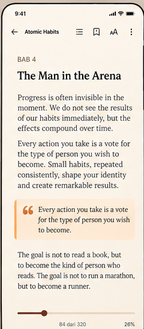
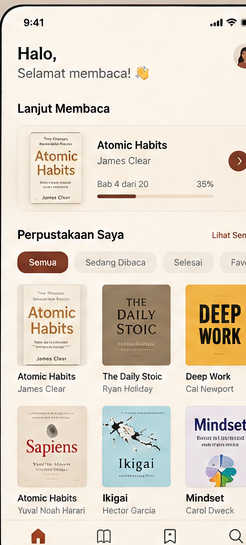
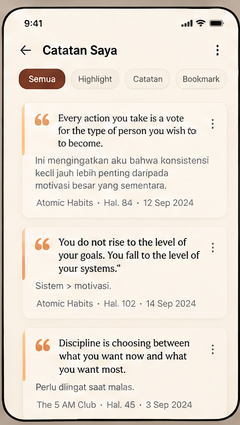
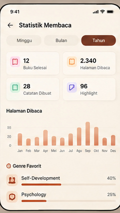
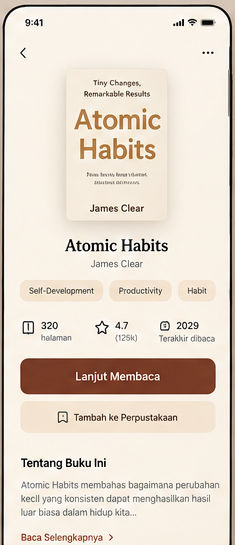
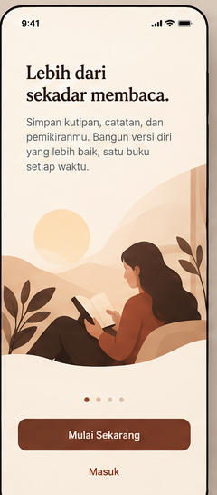

Personal knowledge system offline-first untuk Android. Tangkap kutipan, tulis refleksi, dan hubungkan insight antar buku.

Semua kutipan dari berbagai buku otomatis berkumpul di satu Knowledge Hub.
Catat pemikiran pribadimu di setiap kutipan dan hubungkan lintas topik.
Cari teks quote atau refleksi seketika menggunakan SQLite Full-Text Search.
1-klik dari catatan untuk langsung kembali ke nomor halaman buku sumber.





Pilih PDF atau EPUB
Tandai kalimat penting
Tulis opini & label
Cari & Deep Link
Buka menu Perpustakaan dan pilih file .PDF atau .EPUB dari perangkat. BookMind otomatis membaca judul, penulis, dan sampul buku secara offline.
Buku otomatis terbuka pada halaman terakhir dibaca. Seleksi teks penting dan pilih warna penanda (Kuning, Hijau, Biru).
Ketuk "Tambah Catatan" untuk menuangkan opini pribadimu (*My Reflection*) dan sematkan tag topik (misal: #Productivity).
Akses semua catatan di satu tempat. Gunakan pencarian instan SQLite FTS dan ketuk catatan untuk langsung melompat kembali ke halaman buku asal.